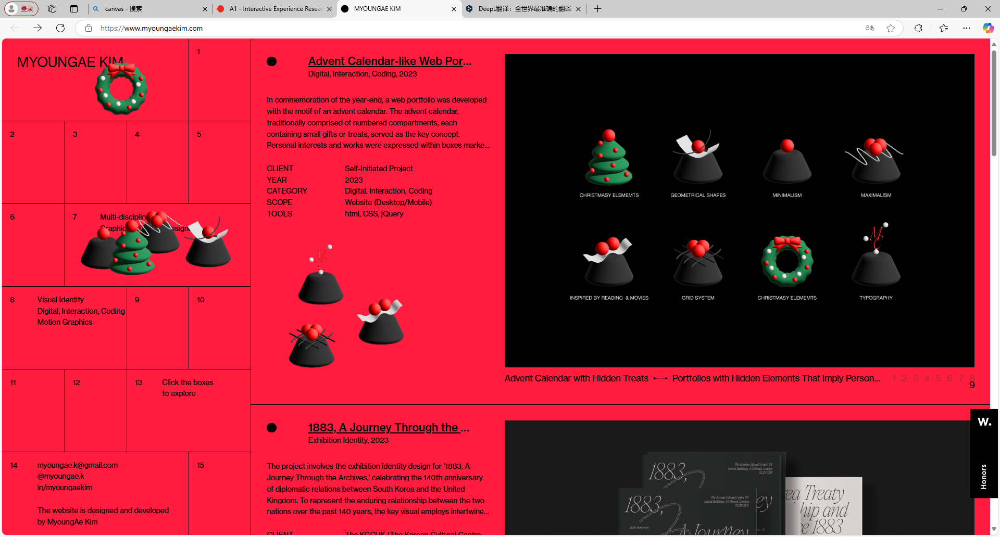

First Attention
In an interactive experience, I'm more concerned with maneuverability,
which can also be described as how many elements there are to interact
with. I'm more interested in whether the page will surprise me than in
the overwhelming content.
Discrete Action
This web page is made up of left and right parts
- 1 The left frame hides some stickers with Christmas elements
- 2 These stickers can be rearranged and combined
- 3 The right side allows me to sad swipe to see information about the use of the page and some of the content
- 4 The text in the fifth cell on the left can be clicked to change the background color. 
Most Engagement
In my experience, I spent more time viewing the articles on the right
part of the page
Common Action
The most action I did during the experience was clicking around and
swiping up and down, because the left part of the page is fixed, but
there are little surprises with Christmas elements hidden inside each
little box, and on the right side there are articles and web page
introductions, so I was swiping all the way around to find the
interesting little surprises.
Primary Goal Impression
The primary goal of MyoungAe Kim's interactive experience on her
website is to showcase her portfolio of graphic and digital design
work. The layout is designed to highlight her skills and creativity,
making it easy for potential clients or employers to view her diverse
range of projects and understand her capabilities in a visually
appealing format.
communication of Goal
The interactive experience on this website communicates its primary
goal through a minimalist design that uses clean, organized grids and
interactive elements. Each project is presented in a way that invites
the user to click and explore further, with detailed explanations and
images that pop up on interaction, effectively conveying her
professional expertise and artistic vision. You can see this for
yourself on her website.
Interaction Over Time
The experience on this website seems designed for relatively
short-term interactions where visitors explore her work in a single
session.At least that's what I did three times during my experience.
Communication Over Time
The website uses a user-friendly interface that subtly guides visitors
on how to interact through visual cues and minimalistic design. The
layout promotes exploration but doesn't specifically communicate a
long-term interaction strategy.
Media References
The website references digital media forms primarily, such as digital
graphics, interactive design elements, and possibly animation. These
references showcase the integration of modern design tools and
techniques, reflecting the digital nature of her work.
Emotional Guidance from References
A website's references to digital forms of media may be meant to evoke
a sense of innovation and modernity. This practice suggests that
visitors should feel engaged and inspired as they browse through her
work.
Most Frustrating Part
The part that I don't think is working well is that the pages are
relatively monotonous and empty, like some kind of report or
presentation PowerPoint. it's not very attractive for the user to stay
on the page for a long time.
Most Satisfying Part
The good thing about this web page is that the information guidelines
are very clear and concise, and the content is expressed in the most
intuitive way, so that people do not understand the purpose of the web
page after operation, and the web page also has some interactive
surprises!